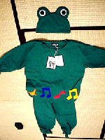

大王様に会うには、上の絵をクリック。ずずっと奥に写真館があるぞ。 |
|
【かえる古新聞】
|
|
【カエル速報】 1.カエルグッズ 2.カエルリンク 3.国家健全化計画 4.謎の髭男 5.とっくりくん 6.街頭で見た蛙 7.カエルショップ 8.奉納カエル絵馬 |
| 大王様へのメール |
奉賛会推薦菓子
かえる饅頭 |
|
|
似合う人を大募集、いますぐ応募メールを
|
 |
実は、このカエルパジャマは、もらったときに一度だけ、げこげこ大王自身が着用した。しっかし、子供には似合っていても、３０歳を過ぎた男が着るのは、あまりにも不気味であった。鏡を見ていたら、母親が部屋に入ろうとしたので、内側から扉を押さえて、阻止したくらい肉親にも見られたくない姿だったのである。やっぱー、手足の部分のフリルと、ナイトキャップならぬカエルキャップが、あまりにも強烈な印象なのである。この姿を知人に見られたら、ちょっと平凡な人生は歩めなくなるであろう(笑)。着用例はここだ。
着用希望者は今すぐメール
【げこげこ大王七世】カエルパジャマを着用希望する人は、メールをくれい。写真や自画像付きなら審査は有利に運ぶであろう(笑)。まー今回の企画が企画なだけに、独身女性の応募に限定したいところだが、家庭を捨ててでも、げこげこ大王と人生を歩みたいという人さまの妻。大王はいやぢゃが、どうしてもカエルパジャマを着用したいという男も、男女平等の観点からしょーがないので受け付けるぞ。しっかし、大切なパジャマがいろんな人に着用されては、やなので、応募者の中から着用者は１名に限らせてもらおう。年齢制限は、まー子供はだめだな。似合うにきまっているからな。１６歳以上で上限なしだ。大王様の自己紹介はここにあるぞよあちこち捜せば大王様の写真集もあるなり。
かえる橋メモリアルシールプレゼント締め切り迫る
【印南町役場】印南町役場が発行した、２１印南かえる橋を売り込む、特製シールを抽選で一名様にプレゼントする企画の締め切りは３月２７日までだ。希望者はいますぐにメールだ。応募が多数になったら、景品を増量するぞー。 大王様へのメールアドレスは、ここだ| 写真の説明＝これがカエルパジャマだ。げこげこ大王様の王妃になる人しか、着ても似合わないと言われている。 |